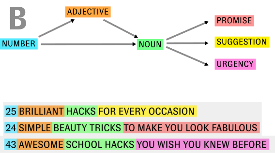
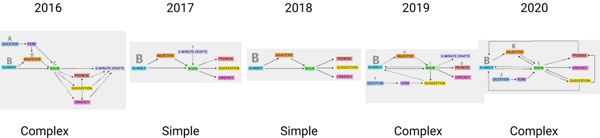
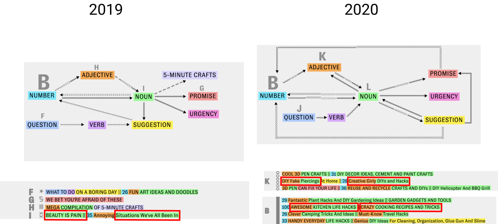

Finding 1
There is a typical format used in the titles of the 50 thumbnails of top most popular videos each year from 2016 to 2020 and it shows a standard pattern of: Number + Adjective + Noun, and this pattern alters in various ways every year.
Finding 2
The formats of these titles keep changing from complex to simple to complex again through all the five years. The formats in 2017 and 2018 are maintained more or less the same.
Finding 3
The titles in 2016 end with the channel name. However, from 2017 onwards this pattern was dropped. From 2017, more search-friendly, keyword-rich titles were created and uppercase words were used.

Finding 4
Since 2019, the channel attempts to reinforce their messaging by using a structure that repeats specific types of words such as an adjective then a noun, and then another adjective. This creates full titles of what you would see, the problems it solved and what you would learn.
